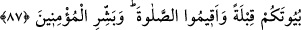

Mütenebbî der ki:
Dünyanın, hür bir kişiye çıkardığı aksiliklerden biri de
Doğru davranılması gereken biri olarak görmesidir düşmanını
Tevekkülün duadan önce zikredilmesinde dua eden kişinin duasına icabet edilmesi
için önce tevekkül etmesi gerektiğine dikkat çekilmektedir.
Tevekkülün hakîkati Allah’tan başka varlıklardan korkma ve bir şey ummayı ortadan
kaldırmak, sebepleri var edeni müşâhede denizinde istiğrak ve sebepleri göz önünde
bulundurmamak demektir.
Büyüklerden birisi der ki: “Tevekkül, kalbin Kâdir-i mutlak olan Allah’ın sevgisine
bağlanması ve O’ndan başkasını unutmasıdır. Yani o ne kendisinin ne de başkasının
kuvvet ve tesiri olduğuna inanır. Bilakis gassal önündeki meyyit gibi ezeli hükme boyun
eğmiştir.
Her kim ki tevekkül deryasında gark olmuştur
Onun himmeti Allah’dan başkasından geçmiştir.
Bu tevekkül gerçi zahmet ve meşakkat verir
Cenâb-ı Hak ardından o adama hazineler ihsan etmeye kâfîdir.
Bu genç kuşak Musa’ya îmân edip Allah’a ibadetle meşgul olmaya başlayınca içinde
ibadet maksadıyla toplanmak için mescid yapmaları icabetti. Çünkü Fir’avn
İsrailoğullarını yendiği zaman mescidlerini de tahrip etmişti. Fakat Fir’avn’un
işkencesinden korkarak dînî şiarlarını açıkça ortaya koyma gücünü bulamayınca, tıpkı
müslümanların İslam’ın ilk yıllarında Mekke’de Erkam’ın evinde gizlice Allah’a ibadet
etmeleri gibi bunlara da kendi evlerinde secdegâh edinmeleri emredildi. Nitekim onlara
şöyle buyrulmuştur:
87. Musa’ya ve kardeşine: “İkiniz kavminiz için Mısır’da evler hazırlayın. (Ey
İsrailoğulları) Evlerinizi mescidler yapın, namaz kılın ve (Ey Musa) mü’minleri
müjdele.” diye vahyettik.
“Musa’ya ve kardeşine” Harun’a: “İkiniz kavminiz için Mısır’da evler hazırlayın.”
el-Kevâşî’de belirtildiğine göre bilinen Mısır’da ya da İskenderiye’de kavminiz için o
bölgenin evlerinden ibadet ve ikamet maksadıyla kullanıp sığınabileceğiniz evler
edinin.
Siz ve kavminiz bu “evlerinizi mescidler yapın,” kıbleye yönelmiş mescidler haline